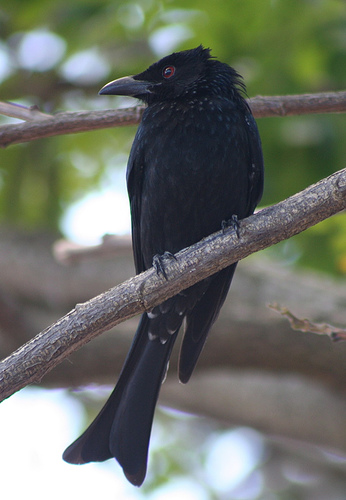

Drongos
The drongos are a family, Dicruridae, of passerine birds of the Old World tropics. The 29 species in the family are placed in a single genus, Dicrurus.
Drongos are mostly black or dark grey, short-legged birds, with an upright stance when perched. They have forked tails and some have elaborate tail decorations. They feed on insects which they catch in flight or on the ground. Some species are accomplished mimics and have a variety of alarm calls, to which other birds and animals often respond. They are known to utter hoax alarm calls that scare other animals off food, which the drongo then claims.
Drongos are found in Salim Ali Bird Sanctuary. Other birds such as Malabar Trogons, Curlews, Purple Herons, etc are also seen in Salim Ali Bird Sanctuary.

